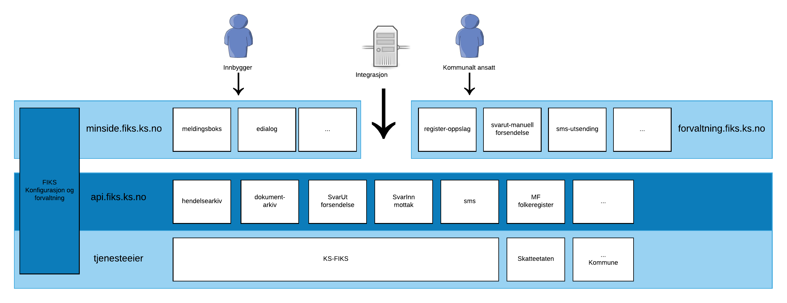

KS FIKS platform
En liten oversikt over fiks plattformen, tjenester og applikasjoner under er et utvalg av fremtidige og nåværende applikasjoner. Hver tjeneste og applikasjon vil være beskrevet på disse sidene.

Fiks plattformen består av et sett med api og en del webapplikasjoner. Alle webapplikasjonene i fiks plattformen benytter seg av apiene som er tilgjengelig.
Hver applikasjon og api kan enten være utviklet og laget as KS, eller av en annen kommune/leverandør. Alt skal være tilgjengelig på fiks.ks.no for alle som bruker plattformen.
Hver bruker skal kunne legge til og fjerne tjenester de vil benytte via konfigurasjonen. Målet er at løsningen skal være selvbetjent.
Integrasjon mot api.fiks.ks.no
Apiene vil i hovedsak benytte følgende tenknologi:
Rest
Vi benytter REST lignenede grensesnitt på alle api så lenge det er gunstig. Kun ved spesielle behov vil det bli benyttet annen teknologi. Spesifikasjonen vil bli publisert ved OpenAPI spec. Da finnes det mange verktøy for å lage klienter i forskjellige språk og teknologier.
Inlogging og autorisasjon
Tjenestene vil være beskyttet ved OAuth2. Access_token må være utstedt fra idporten. For tjenester som bruker av innbygger eller personer vil vi benytte OpenID Connect fra idporten. Program integrasjoner kan benytte OAuth2 fra idporten.